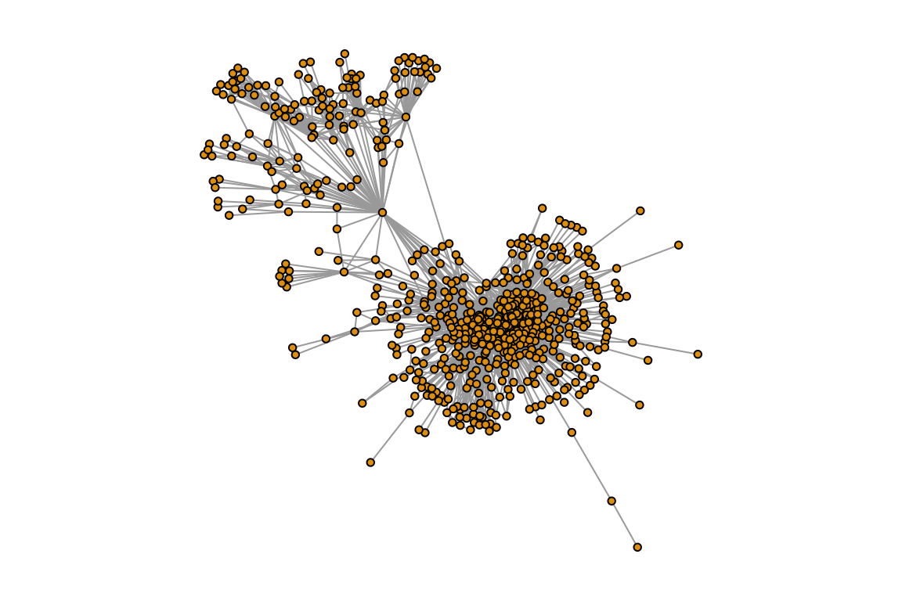
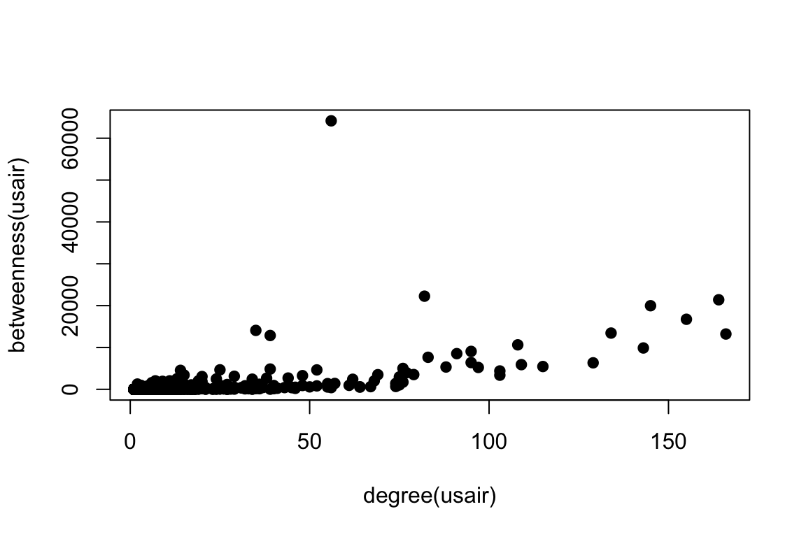
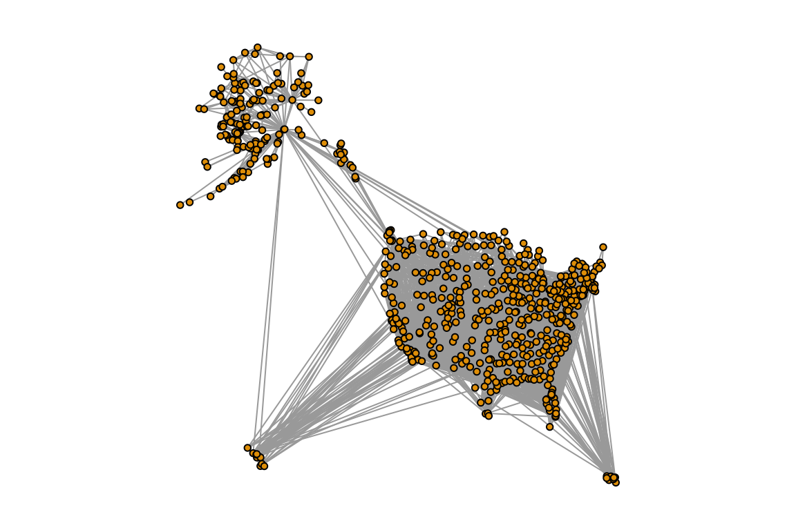
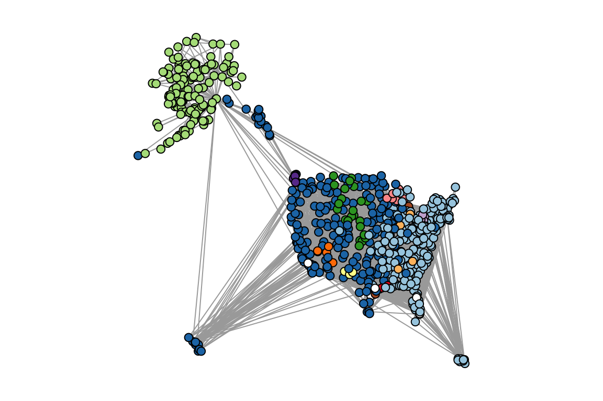
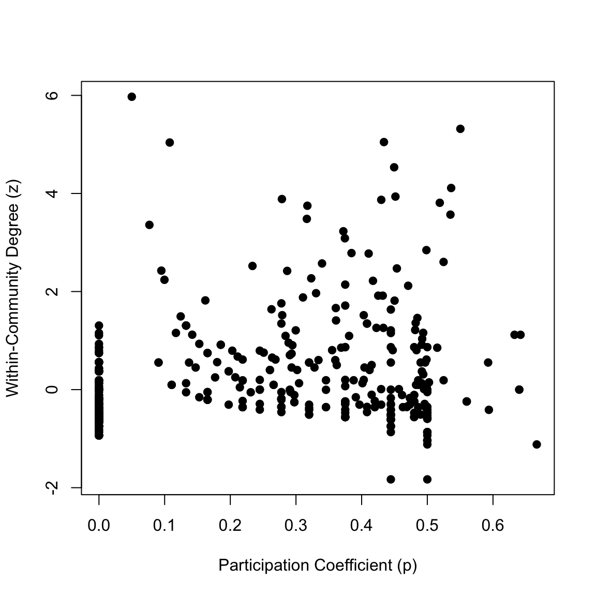
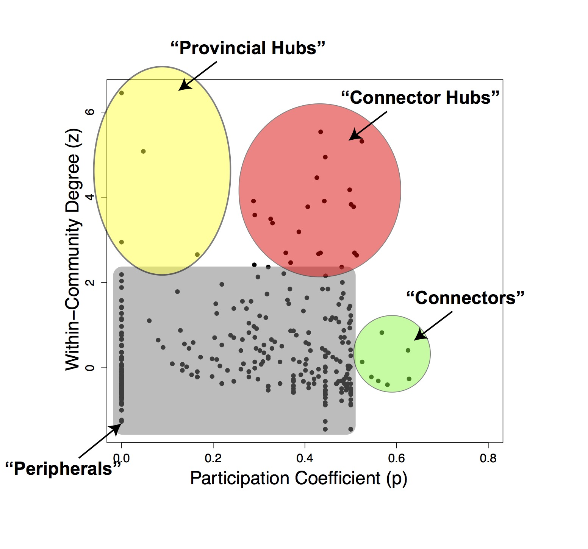

Worked Example: Centrality and Community Structure of US Air Transportation Network
Dai Shizuka
updated 06/12/19

The air transportation network–a network of airports connected by airline routes–is a great example of a spatial network. In a now-classic study, Guimerà et al. (2005) used the world-wide air transportation network to tackle the question of how to measure the importance of nodes in a network, and how different measures can tell us different things. They also propose some alternative measures of position that tells a little bit more about the roles that different nodes play in a complex network. In this exercise we will be a little bit further to think about methods for testing the resilience of networks to disturbance using virtual knockout experiments. Researchers in a wide variety of fields use these virtual knockouts as one tool to understand things like:
- the potential effects of node failure on power grids, transportation networks and information flow
- the effects of the loss of particular individuals in a social network
- the effects of habitat alteration on spatial networks of organisms
1. Getting and plotting the US air transportation network
The Guimerà et al. (2005) paper is based on the global air transportation network. Today, we will play with a smaller (but still plenty big) network of the US domestic air transportation network. The igraphdata package contains a version of this network. In this network, the nodes represent airports and the edges represent flights that went between the airports in December 2010. You can import this data using the following set of codes:
library(igraph)
library(igraphdata)
data(USairports)
USairports## IGRAPH bf6202d DN-- 755 23473 -- US airports
## + attr: name (g/c), name (v/c), City (v/c), Position (v/c),
## | Carrier (e/c), Departures (e/n), Seats (e/n), Passengers (e/n),
## | Aircraft (e/n), Distance (e/n)
## + edges from bf6202d (vertex names):
## [1] BGR->JFK BGR->JFK BOS->EWR ANC->JFK JFK->ANC LAS->LAX MIA->JFK
## [8] EWR->ANC BJC->MIA MIA->BJC TEB->ANC JFK->LAX LAX->JFK LAX->SFO
## [15] AEX->LAS BFI->SBA ELM->PIT GEG->SUN ICT->PBI LAS->LAX LAS->PBI
## [22] LAS->SFO LAX->LAS PBI->AEX PBI->ICT PIT->VCT SFO->LAX VCT->DWH
## [29] IAD->JFK ABE->CLT ABE->HPN AGS->CLT AGS->CLT AVL->CLT AVL->CLT
## [36] AVP->CLT AVP->PHL BDL->CLT BHM->CLT BHM->CLT BNA->CLT BNA->CLT
## + ... omitted several edgesThis igraph object actually includes a vertex attribute called “Position” that encodes the latitude/longitude information. HOWEVER, I found that there are some errors in this data (due to slight errors in airport codes and coordinates). So, what we will do is to use an free, external dataset on airport locations, compiled by the Open Flights project (openflights.org). We can download the airport location data directly a url (output not shown):
airports=read.csv('https://raw.githubusercontent.com/jpatokal/openflights/master/data/airports.dat', header=F)
head(airports)## V1 V2 V3
## 1 1 Goroka Airport Goroka
## 2 2 Madang Airport Madang
## 3 3 Mount Hagen Kagamuga Airport Mount Hagen
## 4 4 Nadzab Airport Nadzab
## 5 5 Port Moresby Jacksons International Airport Port Moresby
## 6 6 Wewak International Airport Wewak
## V4 V5 V6 V7 V8 V9 V10 V11
## 1 Papua New Guinea GKA AYGA -6.081690 145.392 5282 10 U
## 2 Papua New Guinea MAG AYMD -5.207080 145.789 20 10 U
## 3 Papua New Guinea HGU AYMH -5.826790 144.296 5388 10 U
## 4 Papua New Guinea LAE AYNZ -6.569803 146.726 239 10 U
## 5 Papua New Guinea POM AYPY -9.443380 147.220 146 10 U
## 6 Papua New Guinea WWK AYWK -3.583830 143.669 19 10 U
## V12 V13 V14
## 1 Pacific/Port_Moresby airport OurAirports
## 2 Pacific/Port_Moresby airport OurAirports
## 3 Pacific/Port_Moresby airport OurAirports
## 4 Pacific/Port_Moresby airport OurAirports
## 5 Pacific/Port_Moresby airport OurAirports
## 6 Pacific/Port_Moresby airport OurAirportsSo, we can use this data and import the correct latitude (column 7) and longitude (column 8) for each airport as a node attribute:
V(USairports)$lat=airports[match(V(USairports)$name, airports[,5]), 7]
V(USairports)$long=airports[match(V(USairports)$name, airports[,5]), 8]Now, we are going to do a little bit of “clean up” to the data. We are going to: (1) ‘simplify’ the network into an undirected network with no loops (2) remove nodes with airport codes that didn’t match the Open Flights database (probably data entry error in igraphdata) (3) remove US territories nodes that are in the Eastern and Southern Hemispheres to make it easier to see (4) keep only the airports that belong to the largest connected component (called the ‘giant component’), which will also make the network easier to interpret.
Follow the codes below to end up with a new igraph object called usair:
#remove loops and make undirected
usair=as.undirected(simplify(USairports))
#remove airports whose codes didn't match the OpenFlights database (and hence returned "NA" for latitude)
usair=delete.vertices(usair, which(is.na(V(usair)$lat)==TRUE))
#remove nodes in the Eastern and Southern Hemispheres (US territories). This will make the plot easier to see.
usair=delete.vertices(usair, which(V(usair)$lat<0))
usair=delete.vertices(usair, which(V(usair)$long>0))
#keep only the largest connected component of the network ("giant component"). this also makes the network easier to see.
decomp=decompose.graph(usair)
usair=decomp[[1]]Now, let’s take a look at this network:
set.seed(3)
l=layout_with_fr(usair)
par(mar=c(1,1,1,1))
plot(usair, layout=l, vertex.label="", vertex.size=3)
2. Relationship between degree and betweenness of U.S. airports
How should we define the ‘importance’ of an airport in this network? Degree and betweenness are the two most commonly used measure of node centrality (i.e., measures of node position in a network), and in this case, they represent two different measures of importance. Degree centrality tell us how many airports one fly to directly from a given airport. In contrast, betweenness centrality (which is the number of geodesic paths go through the node) gives us a sense for how important the airport is as a transfer location for people getting from one part of the country to another. Note that we are using a simplified network here that only counts unique flight routes, so we are not accounting for the number of replicated flights or the size of the planes.
Let’s explore the relationship between degree and betweenness by generating a simple scatterplot:
plot(degree(usair), betweenness(usair), pch=19) #pch=19 uses filled circles
Compare this to Figure 2a in Guimerà et al. (2005). We can see that in both cases, there is a strong relationship between degree and betweenness, but there are a few nodes that have high betweenness despite intermediate degree. When looking at the U.S. domestic flights only, there is one airport that stands out for having a huge betweenness value but moderate degree. To see what some of these points are, let’s first take a look at the top 10 airports in terms of node degree:
V(usair)$name[order(degree(usair), decreasing=T)][1:10] #order() gives us the element number in order of ranking.## [1] "ATL" "DEN" "ORD" "MSP" "DFW" "DTW" "LAS" "IAH" "CLT" "LAX"You can see that most of these are hubs in the interior of the lower 48 states–probably because we are not counting international flights in this network. Given that, there are few surprises here: we see a lot of familiar names here including Atlanta (ATL), Denver (DEN), O’Hare (ORD), Minneapolis (MSP), Dallas-Ft. Worth (DFW), etc.
Let’s now look at the top 10 airports in terms of node betweenness:
V(usair)$name[order(betweenness(usair), decreasing=T)][1:10] #order() gives us the element number in order of ranking.## [1] "ANC" "SEA" "DEN" "MSP" "ORD" "FAI" "DTW" "ATL" "BET" "LAX"Many of the top 10 betweenness airports are familiar ones from looking at node degree: Denver (DEN), Minneapolis (MSP), Chicago O’Hare (ORD), Detroit (DTW), Atlanta (ATL) and LAX. However, there are some surprises in here: Anchorage (ANC) is the top airport in terms of betweenness by far. Second is Seattle (SEA), which is a big airport but did not appear in the top 10 for degree. There are two other airports from Alaska in here: Fairbanks (FAI), the second largest city in Alaska, and perhaps most surprisingly, Bethel (BET), an airport based in a town of ~ 6,000 people!
Why this discrepancy between the top 10 nodes by degree and top 10 nodes by betweenness? This becomes clear when you look at the network plotted in space. We can also use the coordinates data that we downloaded from Open Flights project earlier to plot the network in space:
longlat=matrix(c(V(usair)$long, V(usair)$lat), ncol=2) #set up layout matrix
par(mar=c(1,1,1,1))
plot(usair, layout=longlat, vertex.label="", vertex.size=3)
You can see the outline of the US here. Now note how many airports there are in Alaska alone! This makes sense because there are so few roads in Alaska relative to landmass that flying is the main mode of transportation between remote towns. Thus, the airports in Alaska are not well connected in terms of the number of places you can get to by direct flight, but the hubs that connect Alaska to the rest of the U.S. (e.g., Anchorage and Seattle) are disproportionately important in terms of betweenness centrality.
The main point of this exercise is to consider what different indices of centrality are measuring and make sure you consider the complex structure of the network so that you can make sense of what that index is telling you.
3. Community structure in the U.S. air transportation network
One of the findings of the Guimerà et al. (2005) study was that the global airport network has significant community structure (see their Figure 3). That is, the globe divides up into discrete regions where the air transportation network are tightly knit, and the connections between them are relatively sparse. We can apply community detection algorithms to figure out the cluster patterns of the U.S. domestic air transportation network. Guimerà et al. (2005) uses an algorithm called simulated annealing (Guimerà and Amaral 2005). This algorithm is available through a different R package called rnetcarto. However, since this algorithm runs a little bit slow for our purposes today, we will use a faster community detection algorithm called the fast greedy method (Clauset, Newman & Moore 2004), which yield similar results.
fg=fastgreedy.community(usair)
length(fg)## [1] 14modularity(fg)## [1] 0.3644685Now let’s visualize this on the network. We will plot the network with nodes colored based on their community membership. I will use the RColorBrewer to generate 12 colors (maximum distinct colors I can get), and make the last two communities white:
library(RColorBrewer)
fgmembership=membership(fg)
colors.fg=c(brewer.pal(12, name="Paired"), rep("white",2)) #first 12 colors from RColorBrewer, last 2 communities are white
par(mar=c(1,1,1,1))
plot(usair, layout=longlat, vertex.label="", vertex.color=colors.fg[fgmembership], vertex.size=5)
What you can see in these figures is that the U.S. transportation system is broken up into several communities that make some geographic sense: Alaska, West Coast/Hawaii, Eastern/Puerto Rico. There are also a few small, very local subnetworks like the Kenai Peninsula and Southern Alaska or the Northern Great Plains. If you look carefully, there are even a few small clusters that don’t make much geographic sense–some of these are subnetworks of private/corporate airports or Air Force bases.
Guimerà et al. (2005) proposed that we can use this community structure to identify the roles that nodes play within and across their networks. They propose two measures in particular: Within-Community Degree (z) and Participation Coefficient (P). They define them as follows:
The Within-community Degree of node \(i\) is:
\(Z_i=\frac{k_i-\overline{k}_{si}}{\sigma_{k_{si}}}\)
Where \(k_i\) is the number of links of node \(i\) to other nodes in its community, \(s_i\), then this value is the z-score of the node’s degree within it’s community, standardized across communities.
The Participation Coefficient is defined as:
\(P_i=1-\sum_{s=1}^{N_m} \left(\frac{k_{is}}{k_i}\right)^2\)
Where \(k_{is}\) is the number of links of node \(i\) to nodes in community \(s\), and \(k_i\) is the total degree of node \(i\). \(N_M\) is the total number of communities. Thus, the participation coefficient is close to one if the links of a node is evenly distributed across all communities and zero if it links are exclusively with nodes of their own community.
We can manually calculate both of these scores:
##calculate within-module degree, z
z=list()
for (i in 1:max(fgmembership)){
newg=delete.vertices(usair, which(fgmembership!=i))
wideg=degree(newg)
z[[i]]=(wideg-mean(wideg))/sd(wideg)
}
z=unlist(z)
## calculate participation coefficient
p=vector(length=vcount(usair))
for(i in 1:vcount(usair)){
nei=neighbors(usair, i) #get all neighbors of node i
tab=table(fgmembership[names=nei]) #get table of community membership for neighbors
p[i]=1-sum((tab/sum(tab))^2)
}
#create dataframe with airport name, z and p
dat=data.frame(name=V(usair)$name, z=z[match(V(usair)$name,names(z))], p=p)Let’s plot the z-P phase-space, as in Figure 4a of Guimerà et al. (2005):
plot(dat$p, dat$z, pch=19, ylab="Within-Community Degree (z)", xlab="Participation Coefficient (p)")
In the paper, Guimerà and colleagues heuristically into several parts. Here is a simplified version of what they do:

Under this framework, we can identify several different types of roles.
- Most nodes are considered “Peripherals”, with relatively low \(z\) and low \(P\).
- “Connector” nodes may have high \(P\) without having a high \(z\): they don’t play a strong role in their own community but tend to bridge communities. These tend to be lesser-known airports (e.g., Topeka, Ketchikan).
- “Provincial Hubs” are nodes that have high degree within their community but low connections across communities. These include airports like Fairbanks and Bethel in Alaska.
- “Connector Hubs” are strongly connected within their community but also bridge their community with other communities. These include aiports like Anchorage and Seattle.
NOTE: You can actually do this exercise more easily using the rnetcarto package. However, the netcarto() function takes a while to run (a few minutes), which makes it a bit cumbersome for workshop purposes. Here is the code to do that (result not shown)
library(rnetcarto)
usair.mat=as_adjacency_matrix(usair, sparse=F) #make the igraph object into an adjacency matrix (the format rnetcarto likes)
rnc=netcarto(usair.mat) #run the simulated annealing algorithm
#modularity
rnc[[2]]
#number of modules
length(unique(rnc[[1]]$module))
plot(rnc[[1]]$participation, rnc[[1]]$connectivity, pch=19)